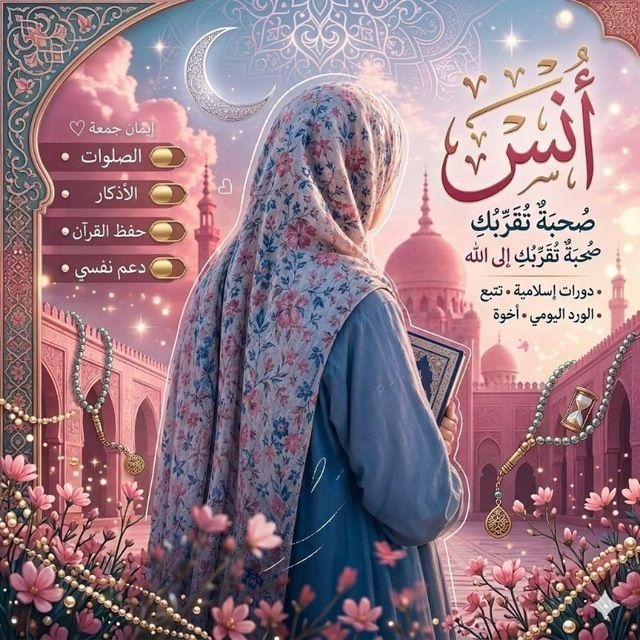
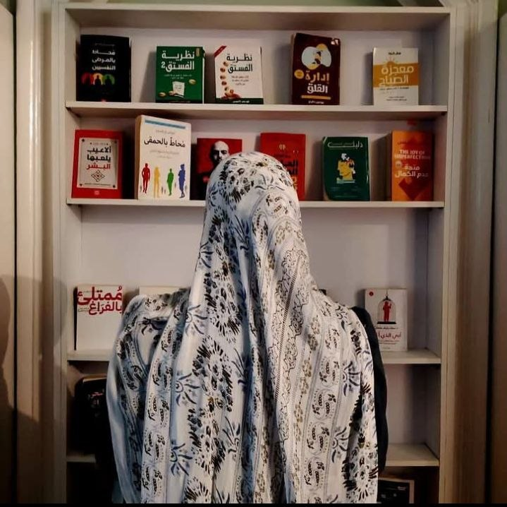
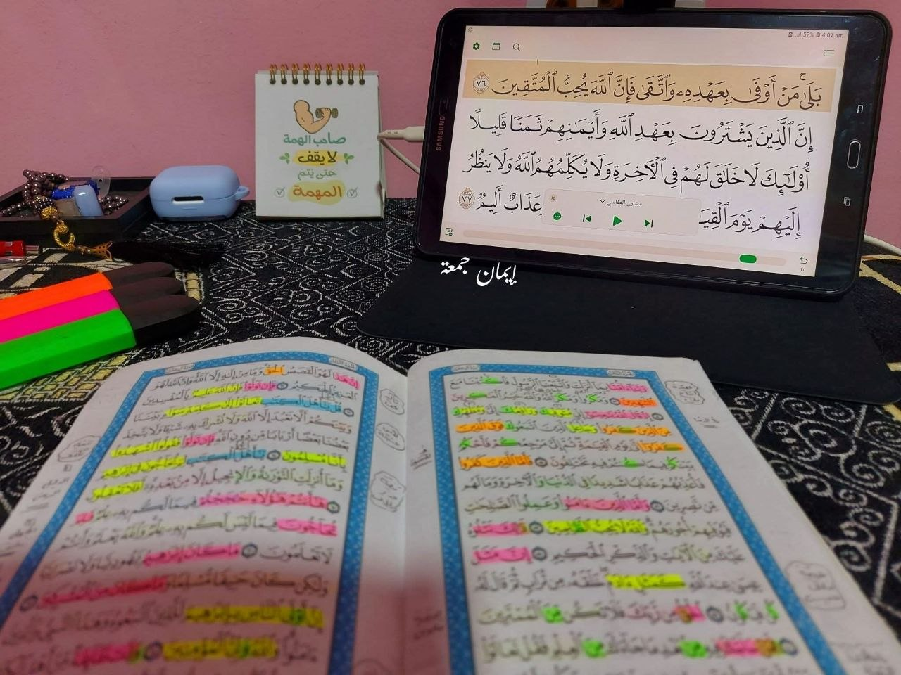

من غير ضغط، لكن بأُنس.. رحلة دافئة لقلبكِ مع صحبة صالحة تشبهكِ وتشدُّ على يدكِ.
انضمي لعائلتنا في أُنس 🌸
أنا إيمان جمعة، خريجة كلية الآداب، معلمة قرآن وكاتبة محتوى وفي طريقي أكون معالجة نفسية بإذن الله.
مؤمنة بفكرة الصحبة الصالحة وإنها سبب كبير في صلاح الإنسان مهما كان حاسس بالوحدة وإن مفيش ناس حواليه شبهه وبتشجعه، خصوصًا احنا كبنات أغلبنا مش بينزل كتير ويتعامل مع الناس. عشان كدا عملت مجتمع أُنس.. اللي فعلًا هتحسي فيه بالأُنس مع بنات شبهك وعندهم نفس أهدافك وهنوصل مع بعض بإذن الله.
كل ما تحسي إنك زهقانة أو عندك مشكلة تأكدي إن هتلاقي هنا الراحة النفسية وهتفصلي عن أي حاجة مضايقاكي.
اسمعوا محاضرة "عرفت ربي" لمعلمتي أم عبيدة نفع الله بها، متأكدة إنها هتفرق معاكم جدًا في تهيئة قلوبكم للرحلة.
سماع المحاضرة عبر تليجرامفيديو يوميًا من سلسلة الشيخ مشاري الخراز، نأخذ منه خطوة عملية لندخل الصلاة بقلوب حاضرة خاشعة.
نصف ساعة يوميًا لتدبر وفهم الأذكار، لكي لا تكون مجرد كلمات نرددها، بل طمأنينة تسكن أرواحنا.
قراءة أو سماع صفحة واحدة من القرآن يوميًا.. حبل متصل لا ينقطع مع كلام الله تبارك وتعالى.
جملةٌ بدأنا بها كثيراً، لكن ضغوط الأيام جعلت الحماس يذبل قبل الوصول. الحقيقة أن القرآن ليس مجرد "خطة"، بل هو رحلةُ ثباتٍ تحتاجُ لرفقةٍ تشدُّ على يدكِ حين تفترين. 🌿
الحل ليس في قوة البداية، بل في استمرارية الصحبة. في "أُنس"، نحنُ رفيقاتُكِ في طريق الختم.
